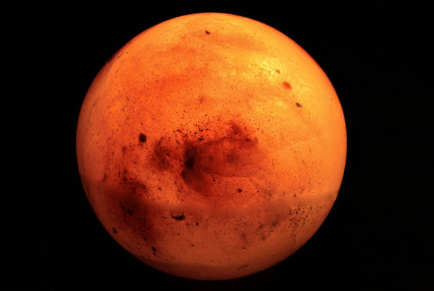
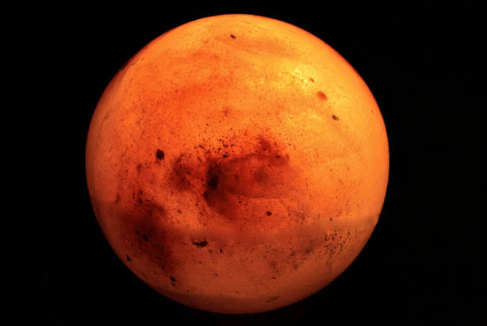
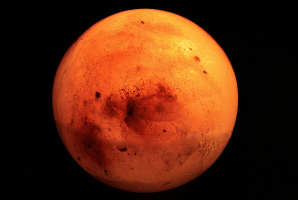

A model of the Solar System has been constructed to scale in Portland, Oregon. The Sun and all the planets are shown to scale. The Sun is the orange chimney at OMSI, approximately 9 feet, 1 inch in diameter. The planets and our moon are spheres of mineral or concrete. They are placed throughout the city at scale distances from the Sun. The Portland Solar System covers 150 square miles in Portland. Sites have been chosen for accurate scale distance from the Sun, as well as for scenic views of the city. Touring the Solar System in Portland provides both an experience of the immense distances and powerful gravitational forces of our solar system, and a sense of the variety and beauty of Portland landscapes and panoramic views. The Sun and the first five planets can be seen on a walking tour. The remaining planets can be visited by car, bicycle, or bus. The inner planets and Jupiter can be visited on a walking tour. To start the tour, get yourself to OMSI, on the east bank of the Willamette River. From downtown, drive, walk or bike across the Hawthorne Bridge, or take the 83 bus from 5th and Salmon. If you use the bus for the tour, get a $4 all-day pass at the Tri-Met ticket machine at Pioneer Square or 5th & Salmon. Hang on to the ticket, though, because every bus driver asks you to do something different with it. Once at OMSI, walk to the Northwest corner of the generator building to see the small black plate identifying the sun. To see the chimney, which represents the sun, follow the curved pathway above the riverbank to the Southwest corner of the generator building and look up.
